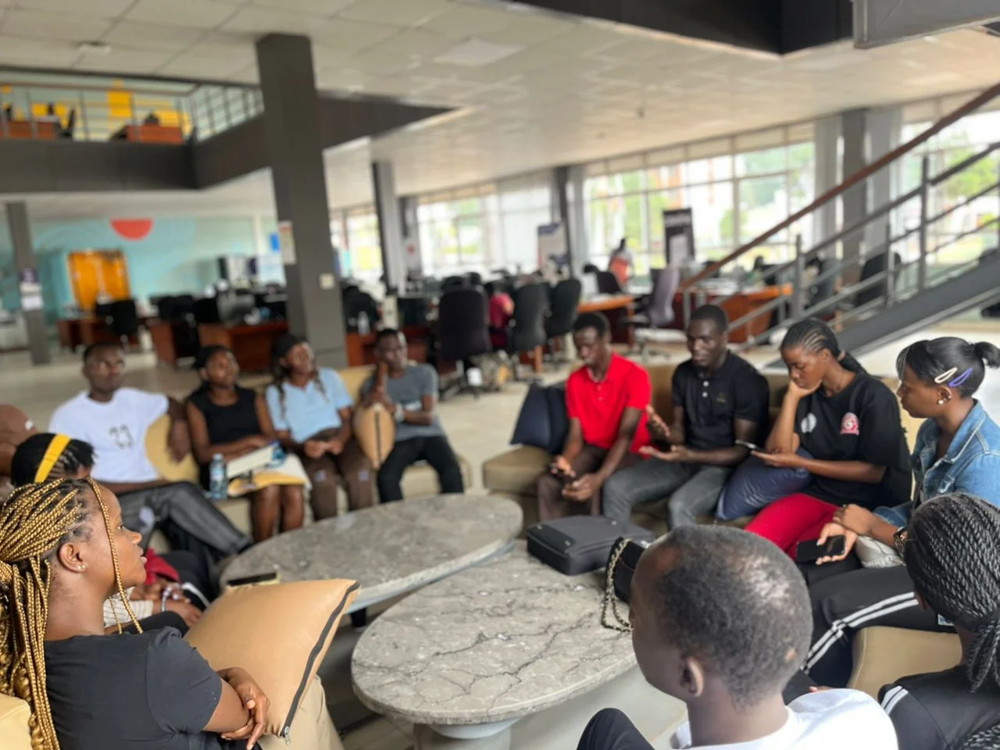

Backpacking Uganda works best when you accept two truths at once: the country is wonderfully rewarding, and it asks for more patience than some easier backpacker circuits elsewhere. Distances matter. Road days matter. Planning matters. But so does flexibility, because the real pleasure often comes from leaving room for the country to surprise you between the big highlights.
What makes Uganda so good for backpackers is that a trip can still feel full and meaningful without constant luxury. Scenic towns, markets, public movement, budget lodging, shared transport, and carefully chosen splurges can combine into a journey that feels adventurous and deeply real. Backpacking here is not about doing Uganda cheaply at any cost. It is about traveling it closely.
For independent travelers who value freedom, route variety, and the sense of earning a place through movement, Uganda can be one of East Africa's most satisfying countries to explore.
Patience Is Part Of The Reward
Uganda is not a country to speed through thoughtlessly. The travelers who enjoy it most are usually the ones who accept travel time, use it well, and build routes that make geographic sense. Once that mindset clicks, the trip often becomes far richer.
The country rewards rhythm more than haste.
Spend On The Right Things
Backpacking does not mean never spending. In Uganda, it often makes sense to save on some transport or lodging choices so you can protect the experiences that matter most, whether that is a trek, a wildlife activity, or simply a better rest stop after a hard travel day.
Thoughtful compromise works far better than blanket cheapness.
Why Independent Travel Feels So Good Here
Uganda still gives backpackers a feeling that the trip belongs to them. The country is structured enough to move through, yet open enough to preserve a sense of discovery. That balance is exactly what many independent travelers are searching for.
For readers wanting adventure with flexibility and soul, backpacking Uganda can be a deeply satisfying way to go.